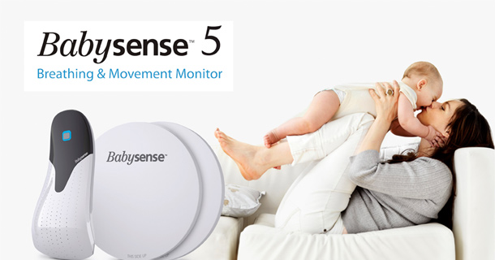

『温润如玉 巧夺天工』——致SmartisanT2
说句心里话，当初看发布会的时候，并不觉得T2怎么样，总觉得是T1的升级版。但是当你亲自体验完以后，你会发现“温润如玉”这四个字 用在T2身上是再合适不过了。废话不多说，直接上图。相信你看完之后，也会跟我一样爱不释手！ 说句心里话，当初看发布会的时候，并不觉得T2怎么样，总觉得是T1的升级版。但是当你亲自体验完以后，你会发现“温润如玉”这四个字 用在T2身上是再合适不过了。废话不多说，直接上图。相信你看完之后，也会跟我一样爱不释手！
